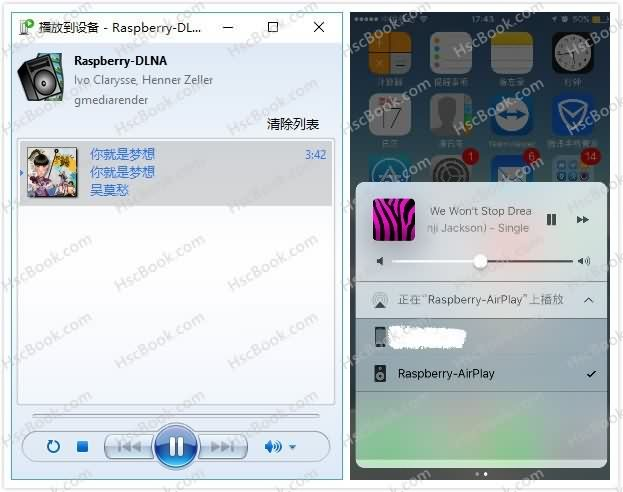

树莓派香橙派无线播放，实现DLNA与AirPlay协议无线音箱
评论改造树莓派、香橙派摇身一变无线WIFI音响在线播放，无需安装XBMC这个庞然大物也能实现DLNA和AirPlay双协议的WIFI音响，DLNA 实现于Gmrender-resurrect项目、AirPlay实现于Shairport项目
准备工作
拿出你放在角落里积灰的树莓派，扫扫灰尘，必要的时候再抚摸安慰一下？！哈哈哈
- 选购一个降噪的USB声卡，树莓派的声噪有点惨不忍睹
- 选购一个干扰低的电源给树莓派供电
- 选购一个好点的音响并连接到树莓派
- 让树莓派有线/无线连接你到家WIFI
- 准备一个10速内存卡，并烧录官方系统
DLNA 协议项目：gmrender-resurrect
AirPlay 协议项目：shairport
必要环境
1 | $ sudo apt-get install git |
DLNA 协议
参考文档：https://github.com/hzeller/gmrender-resurrect/blob/master/INSTALL.md
安装依赖
gstreamer1.0-alsa 可选为 gstreamer1.0-pulseaudio 这个要根据自己的环境而定，参考官方帮助文档 gmrender-resurrect 如果你不知道这是什么就无视这一段话。
1 | $ sudo apt-get install libupnp-dev libgstreamer1.0-dev gstreamer1.0-plugins-base gstreamer1.0-plugins-good gstreamer1.0-plugins-bad gstreamer1.0-plugins-ugly gstreamer1.0-alsa autoconf |
安装 Gmrender
1、定位到home文件夹并克隆程序源码
1 | $ cd ../home/ |
2、转到刚刚克隆的gmrender-resurrect文件夹并安装
1 | $ cd gmrender-resurrect |
3、输入下面的命令运行服务并用电脑或者安卓一类支持DLNA播放的设备播放一首歌试试吧
1 | $ gmediarender -f "Raspberry-DLNA" 2 |
设置开机自启
1、拷贝相关配置文件
1 | $ cp scripts/init.d/gmediarenderer /etc/init.d/ |
2、建立用户组
1 | useradd -g audio gmediarender |
3、修改配置文件 /etc/init.d/gmediarenderer
1 | DAEMON_USER="gmediarender:audio" #用户组 |
4、设置开机自启
1 | update-rc.d gmediarenderer defaults |
AirPlay 协议
参考文档：https://github.com/abrasive/shairport/wiki
安装依赖
1 | $ apt-get install libssl-dev libavahi-client-dev libasound2-dev libao-dev libpulse-dev |
安装 AirPlay
1、定位到 home 文件夹克隆程序源码并安装
1 | $ cd ../home/ |
2、启动服务用苹果家族设备测试一下能否正常播放
1 | $ ./shairport -a Raspberry-AirPlay |
设置开机自启
1、拷贝相关配置文件
1 | $ cp scripts/debian/default/shairport /etc/default/ |
2、建立用户组
1 | useradd -g audio shairport |
3、修改配置文件 /etc/init.d/shairport
1 | USER=shairport #用户 |
4、设置开机自启
1 | update-rc.d shairport defaults |
最终效果

更多教程
http://raspberrypihq.com/how-to-turn-your-raspberry-pi-into-a-airplay-receiver-to-stream-music-from-your-iphone/
https://blog.wanghw.cn/archives/raspberry-wifisoundtrack.html
https://github.com/hzeller/gmrender-resurrect/blob/master/INSTALL.md
https://github.com/abrasive/shairport/wiki
本文标题：树莓派香橙派无线播放，实现DLNA与AirPlay协议无线音箱
文章作者：HscPro
发布时间：2017-04-17
最后更新：2021-12-19
原始链接：https://www.hscbook.com/article/raspberrypi-audio/
版权声明：除非注明，本博文章均为原创，转载请以链接形式标明本文地址
分享